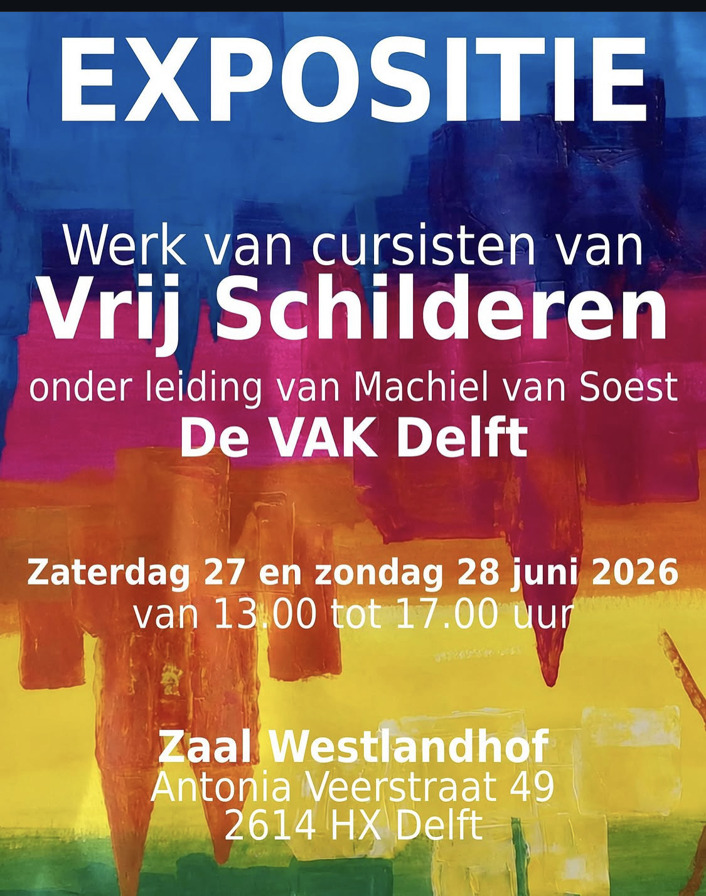

Documentatie
Vrije Kunst
Statement, documentatie en posters rond Vrije Kunst als overkoepelend concept.
Vrije Kunst
Gewoonlijk wordt aangenomen dat er een duidelijk onderscheid bestaat tussen amateurkunst en professionele kunst. Vaak wordt daarbij impliciet een verschil in niveau verondersteld: de professional zou beschikken over meer kwaliteit, vakmanschap of artistieke zeggingskracht dan de amateur. Maar het wezenlijke onderscheid ligt niet noodzakelijk daar. Het ligt eerder in de positie van de maker. De professionele kunstenaar probeert met het werk een inkomen, een publiek en een plaats binnen het kunstcircuit op te bouwen. De amateur maakt kunst zonder dat daarvan rechtstreeks een professionele positie of bestaanszekerheid afhangt.
Dat verschil in positie heeft gevolgen voor de omstandigheden waarin kunst ontstaat. Professionele kunstenaars bewegen zich binnen een krachtenveld van musea, galeries, verzamelaars, subsidies, beleidsdoelen en de kunstmarkt. Deze structuren maken het mogelijk dat kunst wordt geproduceerd, tentoongesteld en bewaard, maar bepalen tegelijk mede welke kunstenaars zichtbaar worden, welk werk culturele of financiële waarde krijgt en welke ideeën aandacht ontvangen. Kunst kan daardoor behalve een vorm van persoonlijke expressie ook functioneren als investering, statussymbool of middel voor maatschappelijke en politieke beïnvloeding.
Dit betekent niet dat professionele kunstenaars daarom onvrij zijn of niet vanuit een innerlijke noodzaak kunnen werken. Evenmin is de amateur volledig onafhankelijk van mode, publieke waardering of sociale verwachtingen. Artistieke vrijheid is nooit absoluut. Toch bestaat er een belangrijk verschil in afhankelijkheid. Wie voor inkomen, erkenning en voortzetting van een carrière mede afhankelijk is van instituties en marktpartijen, moet zich in zekere mate verhouden tot hun verwachtingen en criteria. De amateur bevindt zich doorgaans op grotere afstand van dat systeem.
Juist daarin ligt een bijzondere mogelijkheid. De amateur hoeft geen marktpositie te veroveren, geen oeuvre strategisch op te bouwen en niet noodzakelijk te beantwoorden aan subsidievoorwaarden, institutionele voorkeuren of de actuele kunstcanon. Daardoor kan er meer ruimte ontstaan voor een directe en persoonlijke vorm van maken: uit nieuwsgierigheid, noodzaak, plezier of de behoefte iets te onderzoeken waarvoor geen externe rechtvaardiging nodig is.
Amateurkunst zou daarom niet moeten worden beschouwd als een onvolmaakte voorfase van professionele kunst. Zij vertegenwoordigt een andere positie binnen het artistieke landschap en daarmee ook een andere vorm van vrijheid. Waar professionele kunst onvermijdelijk deel uitmaakt van economische, maatschappelijke en institutionele structuren, kan in de amateurkunst iets behouden blijven van een oorspronkelijk artistiek gebaar: maken zonder dat het werk ergens toe hoeft te leiden.
Misschien ligt juist daar de vrije kunst: niet in de afwezigheid van iedere invloed, maar in de mogelijkheid om te maken zonder dat erkenning, status of economisch belang het uiteindelijke doel bepalen. Kunst om het maken zelf.
Documentatie

